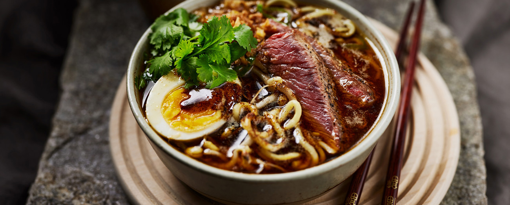

Ramen

How to make this Ramen recipe
Ingredients
- 1 tsp sesame oil
- 1 tsp olive oil
- 2 cloves minced garlic
- 2 tsp freshly grated ginger
- 1/2 cup shredded carrots
- 4 cups chicken broth
- 1 TBSP rice vinegar
- 3 TBSP Siracha sauce
- 2 3 oz portions of Ramen
Steps
- Heat the oil in a medium-sized saucepan over medium heat. Once the oil is hot, you will add the garlic and ginger, and simmer until fragrant.
- add the rest of the veggies you want to cook—in this recipe, the carrots and mushrooms—and cook them until they soften up.
- Transfer the broth to the pot and add the rice vinegar, soy sauce, and Sriracha. Give the broth a good stir to combine the ingredients.
- Let the soup simmer for about five minutes, then give it a taste and add more soy sauce or Sriracha if needed.
- While the soup simmers, cook the Ramen noodles in a separate pot as per the packages instructions.
- When done, drain, rinse under cool water, place into your soup bowl, and set aside.
- Once the broth is ready, spoon it over the noodles, then garnish the bowl with whatever you please!